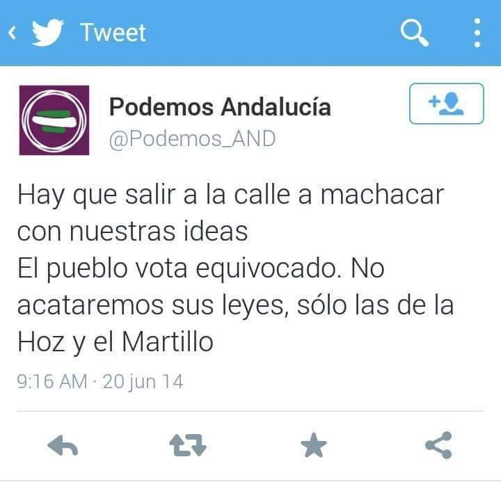

El pueblo vota equivocado
En diferentes grupos de WhatsApp y redes sociales empieza a difundirse la siguiente captura de pantalla justo después de las elecciones autonómicas andaluzas de 2018 y de que desde algunos colectivos de izquierda se haga llamamientos a manifestarse en las calles en diversos términos.

<<< Volver a las preguntas

Este obra está bajo una licencia de Creative Commons Reconocimiento-CompartirIgual 4.0 Internacional.